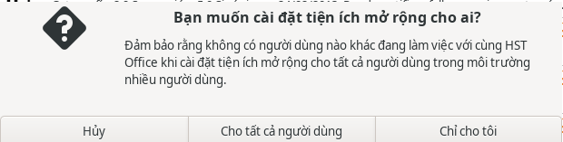
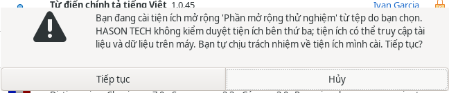
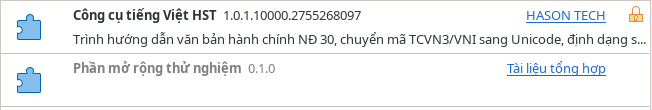

Khác
Cài phần mở rộng từ tệp
Phần mở rộng là tệp .oxt dùng để bổ sung tính năng cho HST Office.
HST Office không tải phần mở rộng qua mạng và không có kho phần mở rộng trực tuyến. Bạn tự chọn tệp có sẵn trên máy.
Trách nhiệm của người dùng: Phần mở rộng có thể đọc, sửa tài liệu và chạy mã trên máy của bạn. Chỉ cài phần mở rộng từ nguồn bạn tin cậy. HASON TECH không kiểm duyệt và không chịu trách nhiệm về phần mở rộng do bên thứ ba cung cấp.
Cài từ tệp có sẵn
- Mở thẻ trên thanh công cụ, bấm nút . Hộp thoại mở ra.
- Bấm và chọn tệp
.oxt. - HST Office hỏi cài cho ai. Thường chọn .
- Đọc kỹ hộp thoại cảnh báo. Bấm nếu bạn tin nguồn của tệp, hoặc .
- Phần mở rộng xuất hiện trong danh sách. Khởi động lại HST Office nếu được yêu cầu.


Tắt hoặc bật lại phần mở rộng
- Mở hộp thoại như trên và chọn phần mở rộng.
- Bấm . Phần mở rộng bị làm mờ trong danh sách; nút đổi thành để bật lại.
- Khởi động lại HST Office để thay đổi có hiệu lực đầy đủ.

Gỡ phần mở rộng
- Mở hộp thoại .
- Chọn phần mở rộng cần gỡ, bấm , rồi bấm để xác nhận.
- Khi đóng hộp thoại, HST Office có thể hỏi khởi động lại. Chọn hoặc .
Phần mở rộng đi kèm HST Office có biểu tượng ổ khóa: không gỡ được.